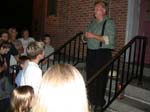

| page 8 of 8 |
| A Tour of Gettysburg with Gerald Bennett 7/30/2001 |
UCLA at Gettysburg Journal |
| page 8 of 8 |
 |
 |
|
| Even the photographer gets his mug shot at O'Rourkes. | After dinner the group went on a candlelight walking Ghosts of Gettysburg tour. Not just any tour - the one and only ORIGINAL ghost tour! | Our guide started at the Adams County Courthouse with a story about ghostly boot-steps and a couple of frightened night watchmen. |
| Creepy picture of a clocktower on the Gettysburg College campus after dark. Do you see the shadow of a young girl who jumped to her death as part of a lovers pact? (I don't) |